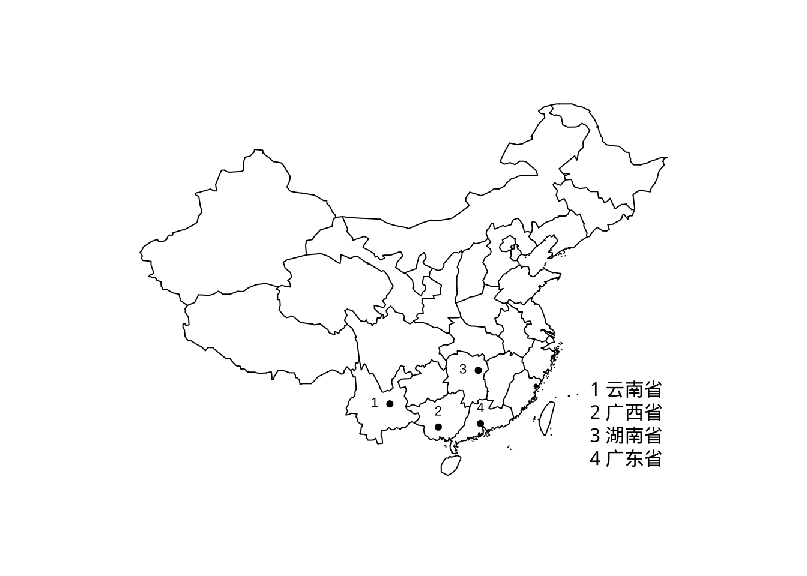

第 12 章 地图
12.1 部分中国地图
## 显示字体
library(sysfonts)
library(showtextdb)
library(showtext)
showtext_auto(enable = TRUE)
font_add('font/simhei', 'font/simhei.ttf')
# names(postscriptFonts()) # 查看字体集## 用eps保存图片
# setEPS()
# postscript('eps/中国地图.eps', width=6, height=7)
# dev.off() library(maps)
library(mapdata)
dat = read.csv(text =
"城市,jd,wd
4,113.25,23.13333333
3,113,28.18333333
1,102.6833333,25
2,108.3333333,22.8
")
map("china", ylim = c(18, 54))
points(dat$jd, dat$wd, pch = 19, cex = 0.7)
text(dat$jd, dat$wd, dat[, 1], cex = 0.7, pos = c(3,2,2,3))
legend('bottomright', legend=c('1 云南省','2 广西省','3 湖南省','4 广东省'), bty='n')
12.2 中国地图
用 R 语言绘制包含十段线的地图，并且可以根据数据实现对各省份的填色。
12.2.1 获取数据
library(geojsonsf)
library(sf)
library(ggplot2)
library(RColorBrewer)
library(ggspatial)
library(cowplot)12.2.2 绘制地图
fig1 <- ggplot()+
# 绘制主图
geom_sf(data = China,fill='NA') +
# 绘制国界线及十段线
geom_sf(data = gjx)+
# 添加省份名称
geom_text(data = province,aes(x=dili_Jd,y=dili_Wd,label=省市),position = "identity",size=3,check_overlap = TRUE) +
labs(title="中国地图")+
theme(plot.title = element_text(color="black", size=16, face="bold",vjust = 0.1,hjust = 0.5),
legend.title=element_blank(),
legend.position = c(0.2,0.2),
panel.grid=element_blank(),
panel.background=element_blank(),
axis.text=element_blank(),
axis.ticks=element_blank(),
axis.title=element_blank()
)#+
##添加指北针，“style”参数可以更改样式
# annotation_north_arrow(location='tl', which_north='false',style=north_arrow_orienteering())
fig1# 读入数据
nine_lines = read_sf('map/南海.geojson')
# 绘制九段线小图
fig2 = ggplot() +
geom_sf(data = China,fill='NA', size=0.5) +
geom_sf(data = nine_lines,color='black',size=0.5)+
##去掉主图的部分区域
coord_sf(ylim = c(-4028017,-1877844),xlim = c(117131.4,2115095),crs="+proj=laea +lat_0=40 +lon_0=104")+
theme(
aspect.ratio = 1.25, #调节长宽比
axis.text = element_blank(),
axis.ticks = element_blank(),
axis.title = element_blank(),
panel.grid = element_blank(),
panel.background = element_blank(),
panel.border = element_rect(fill=NA,color="grey10",linetype=1,size=0.5),
plot.margin=unit(c(0,0,0,0),"mm"))
fig2fig = ggdraw() +
draw_plot(fig1) +
draw_plot(fig2, x = 0.8, y = 0, width = 0.13, height = 0.39)
fig### 地图填色
colour <- read.csv("map/colour.csv")
head(colour)
## shengfen colour QUHUADAIMA
## 1 新疆 0~200 650000
## 2 西藏 0~200 540000
## 3 青海 600~1000 630000
## 4 甘肃 0~200 620000
## 5 宁夏 200~400 640000
## 6 内蒙古 400~600 150000colour$QUHUADAIMA <- as.character(colour$QUHUADAIMA)
CHINA <- dplyr::left_join(China,colour,by= "QUHUADAIMA")fig1 <- ggplot() +
geom_sf(
data = CHINA,
aes(fill = factor(colour))) +
## 填色
scale_fill_manual(
"class",
values = c("#9CEED3", "#79CBC2", "#5EA9AC", "#4B8793", "#3C6777"),
breaks = c("0~200", "200~400", "400~600", "600~1000", "1000+"),
labels = c("0~200", "200~400", "400~600", "600~1000", "1000+")
) +
geom_sf(data = gjx) +
geom_text(
data = province,
aes(x = dili_Jd, y = dili_Wd, label = 省市),
position = "identity",
size = 3,
check_overlap = TRUE
) +
labs(title = "中国地图") +
theme(
plot.title = element_text(
color = "black",
size = 16,
face = "bold",
vjust = 0.1,
hjust = 0.5
),
legend.title = element_blank(),
legend.position = c(0.2, 0.2),
panel.grid = element_blank(),
panel.background = element_blank(),
axis.text = element_blank(),
axis.ticks = element_blank(),
axis.title = element_blank()
) +
annotation_north_arrow(
location = 'tl',
which_north = 'false',
style = north_arrow_orienteering()
)
# 读入九段线数据
nine_lines = read_sf('map/南海.geojson')
# 绘制九段线小图
nine_map = ggplot() +
geom_sf(data = CHINA,fill='NA', size=0.5) +
geom_sf(data = nine_lines,color='black',size=0.5)+
coord_sf(ylim = c(-4028017,-1877844),xlim = c(117131.4,2115095),crs="+proj=laea +lat_0=40 +lon_0=104")+
theme(
aspect.ratio = 1.25, #调节长宽比
axis.text = element_blank(),
axis.ticks = element_blank(),
axis.title = element_blank(),
panel.grid = element_blank(),
panel.background = element_blank(),
panel.border = element_rect(fill=NA,color="grey10",linetype=1,size=0.5),
plot.margin=unit(c(0,0,0,0),"mm"))
# 使用cowplot包将大图小图拼在一起
fig = ggdraw() +
draw_plot(fig1) +
draw_plot(nine_map, x = 0.8, y = 0, width = 0.13, height = 0.39)
fig12.2.3 给特定省份填色
colour$new_colour <- rep(0,nrow(colour))
##给目标省份赋予不同的数值
colour$new_colour[which(colour$shengfen=="重庆")] <- 1
colour$new_colour[which(colour$shengfen=="山西")] <- 2
colour$new_colour[which(colour$shengfen=="新疆")] <- 3
colour$new_colour[which(colour$shengfen=="内蒙古")] <- 4
CHINA <- dplyr::left_join(China,colour,by= "QUHUADAIMA")
head(colour)
## shengfen colour QUHUADAIMA new_colour
## 1 新疆 0~200 650000 3
## 2 西藏 0~200 540000 0
## 3 青海 600~1000 630000 0
## 4 甘肃 0~200 620000 0
## 5 宁夏 200~400 640000 0
## 6 内蒙古 400~600 150000 4fig1 <- ggplot() +
geom_sf(
data = CHINA,
aes(fill = factor(new_colour))) +
scale_fill_manual(
"class",
values = c("#FFFFFF", "#79CBC2", "#5EA9AC", "#4B8793", "#3C6777"),
breaks = c("0", "1", "2", "3", "4"),
labels = c("0", "1", "2", "3", "4")
)+
geom_sf(data = gjx) +
geom_text(
data = province,
aes(x = dili_Jd, y = dili_Wd, label = 省市),
position = "identity",
size = 3,
check_overlap = TRUE
) +
labs(title = "中国地图") +
theme(
plot.title = element_text(
color = "black",
size = 16,
face = "bold",
vjust = 0.1,
hjust = 0.5
),
legend.title = element_blank(),
legend.position = c(0.2, 0.2),
panel.grid = element_blank(),
panel.background = element_blank(),
axis.text = element_blank(),
axis.ticks = element_blank(),
axis.title = element_blank()
) +
annotation_north_arrow(
location = 'tl',
which_north = 'false',
style = north_arrow_orienteering()
)
# 读入九段线数据
nine_lines = read_sf('map/南海.geojson')
# 绘制九段线小图
nine_map = ggplot() +
geom_sf(data = CHINA,fill='NA', size=0.5) +
geom_sf(data = nine_lines,color='black',size=0.5)+
coord_sf(ylim = c(-4028017,-1877844),xlim = c(117131.4,2115095),crs="+proj=laea +lat_0=40 +lon_0=104")+
theme(
aspect.ratio = 1.25, #调节长宽比
axis.text = element_blank(),
axis.ticks = element_blank(),
axis.title = element_blank(),
panel.grid = element_blank(),
panel.background = element_blank(),
panel.border = element_rect(fill=NA,color="grey10",linetype=1,size=0.5),
plot.margin=unit(c(0,0,0,0),"mm"))
# 使用cowplot包将大图小图拼在一起
fig = ggdraw() +
draw_plot(fig1) +
draw_plot(nine_map, x = 0.8, y = 0, width = 0.13, height = 0.39)
fig